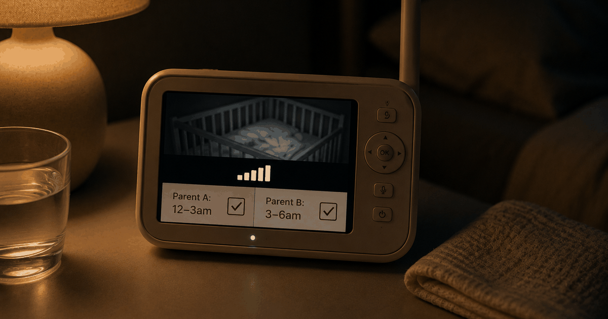

 ES
ESA note from Elizaveta — At Regular we care less about sleep-training dogma and more about what the crib wars do to a couple. This piece keeps the safety basics simple and spends its energy on the part nobody plans for: your sleep, and each other. Why trust us.
If your baby won't sleep in the crib, it's almost always developmentally normal — newborns are wired for contact, warmth and your scent, and a flat, still crib is the opposite of everything they know. It usually isn't a sign anything's wrong. The part nobody warns you about is what the lost sleep does to the two of you: a 2024 study found that when fathers took on more night care, mothers slept measurably better — and relationship satisfaction was part of why (Song et al., Journal of Clinical Sleep Medicine). The fix that matters most isn't a gadget. It's dividing the nights as a team.
It's 3 a.m. The baby is fast asleep on your chest, breathing those tiny fast breaths. You lower them into the crib with the care of a bomb-disposal expert.
The back touches the mattress. The eyes snap open. The screaming begins. And somewhere down the hall, your partner sighs, because now you're both awake — again.
Two things are true here, and the second one matters more than parenting blogs admit. First: your baby is fine. Second: the two of you are quietly getting ground down — and that's the part worth protecting.
Why the crib feels like a trap to a newborn
A newborn won't settle in the crib because it's the opposite of the womb: cold, flat, still, and alone. For roughly nine months "home" was warm, snug, constantly moving and full of your partner's heartbeat. A crib asks a brand-new nervous system to power down in a setting that pings every alarm it has. In the early months this is normal wiring, not a bad habit you accidentally created.
The usual culprits are simple: the startle (Moro) reflex flinging their arms out as they drift off, the shock of a cold sheet after a warm chest, and waking to find the human they fell asleep on is gone.
Before any settling trick, the foundation is safe sleep. The American Academy of Pediatrics is clear and worth following to the letter: baby on the back, on a firm, flat, separate surface, with nothing loose in the space (AAP safe-sleep guidance). Contact naps while you're awake and watching are one thing; unsupervised sleep belongs in the crib or bassinet.
The cost nobody plans for: your relationship
The baby's crib strike is survivable. The compounding sleep loss is what quietly damages the couple — depleted parents argue more, connect less, and keep score in the dark. And the load is rarely shared: in a 2024 study, nearly 75% of fathers did less than a quarter of the nighttime childcare, and more paternal night involvement predicted less maternal insomnia.
This is the through-line most sleep advice misses. The problem isn't only "how do we get the baby down" — it's "how do we get through this without turning on each other." Sleep deprivation is an accelerant on every small friction, which is exactly why the way you two talk falls apart when you're both exhausted.
of fathers in a 2024 study did less than a quarter of nighttime childcare — and greater paternal night involvement predicted lower maternal insomnia, partly through higher relationship satisfaction.
The reassuring flip side: this is a lever you control. You can't argue a newborn into loving the crib, but you can decide how the nights are shared — and that decision moves both your sleep and your bond.
What doesn't work
What fails is the martyr split — one parent (usually mom, if she's breastfeeding) absorbing every wake while the other "sleeps to be functional for work." It burns out the on-parent, breeds resentment, and, per the research, tracks with worse sleep for her. Both parents waking for every single sound is the other losing move: now nobody's rested.
The default many couples fall into — she does nights, he does days — sounds fair on paper and corrodes fast in practice. The parent doing nights has no off-switch, and "I let you sleep" becomes a debt nobody agreed to.
None of this is a character flaw. It's just what happens without a plan. So make a plan.
| The trap | The fix |
|---|---|
| One parent takes every wake | Split the night into shifts you each fully own |
| Both wake for every sound | Off-parent sleeps elsewhere with earplugs |
| Forcing the crib in one night | Drowsy-but-awake, warm sheet, repeat for weeks |
| "I let you sleep" scorekeeping | A set split, reviewed weekly, so it's not a favor |
What actually helps — the nights, and the two of you
Keep safe sleep, ease the crib transition instead of forcing it, and — most important — split the night into shifts so each of you gets one protected block of real sleep. Trading whole shifts beats both parents waking for everything, and it directly targets what the research links to better maternal sleep: shared night load.
- Start with safe sleep. Back, firm flat surface, own clear space, nothing loose. This is the non-negotiable base under every settling trick (AAP).
- Ease the landing. Put the baby down drowsy but awake, warm the sheet with your hand first, keep a steady wind-down. Aim for a gentler landing, not an instant win.
- Split the night into shifts. One parent owns until 2 a.m., the other after — each gets a real, uninterrupted stretch instead of both being half-destroyed.
- Protect the off-parent's sleep. Off-shift means actually asleep: another room, earplugs, not listening for every whimper. Two half-awake parents is worse than one rested, one on duty.
- Give it weeks, and check in. Crib acceptance comes in fits and starts. Once a week, ask how the split feels for both of you and rebalance before resentment sets in.
Here's the real barrier, and it isn't the baby. It's that dividing the nights fairly — when you're both shattered and each genuinely believes they're carrying more — is one of the hardest negotiations a new couple ever runs, at the worst hour to run it. Nobody keeps a fair ledger at 4 a.m. That's the moment a neutral tie-breaker, agreed in daylight, saves you. When the exhaustion starts bleeding into everything else, it's worth knowing how the closeness itself tends to go quiet after a baby — so you can catch it early.
Frequently asked questions
Why won't my baby sleep in the crib?
Because newborns are wired for contact — warmth, your scent, the sound of a heartbeat — and a flat, still crib is the opposite of the womb. A startle reflex, a cold sheet, or simply waking alone can jolt them awake. In the early months this is developmentally normal and rarely means anything is wrong; most babies grow into the crib gradually over weeks.
Is it normal for a newborn to only sleep on you or in your arms?
Yes, it's extremely common and biologically expected in the newborn phase. Babies settle fastest against a caregiver. For safe sleep, though, the American Academy of Pediatrics advises placing the baby on their back on a firm, flat, separate surface for sleep — so contact naps are fine while you're awake and watching, and the crib or bassinet is for unsupervised sleep.
How do I get my baby to sleep in the crib?
Keep safe-sleep basics, then ease the landing: put the baby down drowsy but awake, warm the sheet with your hand first so it isn't a cold shock, and keep a consistent wind-down routine. Expect progress in fits and starts over weeks. Forcing it in one night usually backfires; a gentler, repeated routine wins.
How does the baby's bad sleep affect our relationship?
Heavily. Chronic night waking wrecks parents' sleep, and depleted parents fight more and connect less. A 2024 study found that when fathers took on more nighttime childcare, mothers had significantly less insomnia — and relationship satisfaction was part of the mechanism (Song et al., 2024). How you divide the nights is one of the biggest levers you have on both your sleep and your bond.
Should one parent do all the night wakings?
Usually not. In one study, nearly 75% of fathers did less than a quarter of nighttime childcare — and that imbalance tracked with worse maternal sleep. Trading whole shifts, so each parent gets one protected block of real sleep, tends to beat both parents waking for everything. The exact split matters less than that it feels fair to both of you.
Keep readingLonely as a new dad? Why it happens and what helps · Dead bedroom after baby: what's normal and what helps · How relationships actually work after a baby
Editor-in-Chief at Regular. Writes the analytical, research-backed pieces on what the first year does to a couple — and what quietly helps.
About Regular — the relationship app for new dads, built by a small team of parents who needed it themselves. Small, science-backed moves with your partner, not big talks.